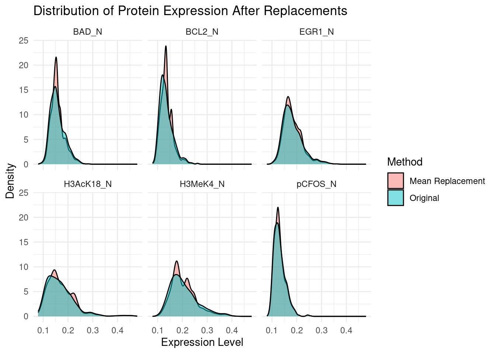

library("tidyverse")02_clean
In this file, we take the raw data we have in the data folder, and we clean it from NAs.
Loading libraries
Loading data
first_path <- "~/projects/R_project"
file_path <- file.path(first_path,
"data/01_dat_load.tsv")
df <- read_tsv(file = file_path)Rows: 1080 Columns: 82
── Column specification ────────────────────────────────────────────────────────
Delimiter: "\t"
chr (5): MouseID, Genotype, Treatment, Behavior, class
dbl (77): DYRK1A_N, ITSN1_N, BDNF_N, NR1_N, NR2A_N, pAKT_N, pBRAF_N, pCAMKII...
ℹ Use `spec()` to retrieve the full column specification for this data.
ℹ Specify the column types or set `show_col_types = FALSE` to quiet this message.Cleaning data
proteins <- df |>
select(2:78) |>
names()
classes <- df |>
distinct(class) |>
pull(class)Checking how many missing values appear in each column.
missing_summary <- colSums(is.na(df))
print(missing_summary) MouseID DYRK1A_N ITSN1_N BDNF_N NR1_N
0 3 3 3 3
NR2A_N pAKT_N pBRAF_N pCAMKII_N pCREB_N
3 3 3 3 3
pELK_N pERK_N pJNK_N PKCA_N pMEK_N
3 3 3 3 3
pNR1_N pNR2A_N pNR2B_N pPKCAB_N pRSK_N
3 3 3 3 3
AKT_N BRAF_N CAMKII_N CREB_N ELK_N
3 3 3 3 18
ERK_N GSK3B_N JNK_N MEK_N TRKA_N
3 3 3 7 3
RSK_N APP_N Bcatenin_N SOD1_N MTOR_N
3 3 18 3 3
P38_N pMTOR_N DSCR1_N AMPKA_N NR2B_N
3 3 3 3 3
pNUMB_N RAPTOR_N TIAM1_N pP70S6_N NUMB_N
3 3 3 3 0
P70S6_N pGSK3B_N pPKCG_N CDK5_N S6_N
0 0 0 0 0
ADARB1_N AcetylH3K9_N RRP1_N BAX_N ARC_N
0 0 0 0 0
ERBB4_N nNOS_N Tau_N GFAP_N GluR3_N
0 0 0 0 0
GluR4_N IL1B_N P3525_N pCASP9_N PSD95_N
0 0 0 0 0
SNCA_N Ubiquitin_N pGSK3B_Tyr216_N SHH_N BAD_N
0 0 0 0 213
BCL2_N pS6_N pCFOS_N SYP_N H3AcK18_N
285 0 75 0 180
EGR1_N H3MeK4_N CaNA_N Genotype Treatment
210 270 0 0 0
Behavior class
0 0 In the shown data we can see that it is mostly full, with few exceptions, when the number of NaNs is above 20 (around 2%). For the data we decided to proceed with replacing the missing data with mean values based on the class, as deleting all of the values could result in missing a big part of data, without which we could not analyse it properly.
Replacing the missing data (NaN) with mean values within each class
df <- as.data.frame(df)
df_mean <- df |>
group_by(class) |>
mutate(across(everything(),
~ ifelse(is.na(.),
mean(., na.rm = TRUE), .))) |>
ungroup()
missing_summary <- colSums(is.na(df_mean))
print(missing_summary) MouseID DYRK1A_N ITSN1_N BDNF_N NR1_N
0 0 0 0 0
NR2A_N pAKT_N pBRAF_N pCAMKII_N pCREB_N
0 0 0 0 0
pELK_N pERK_N pJNK_N PKCA_N pMEK_N
0 0 0 0 0
pNR1_N pNR2A_N pNR2B_N pPKCAB_N pRSK_N
0 0 0 0 0
AKT_N BRAF_N CAMKII_N CREB_N ELK_N
0 0 0 0 0
ERK_N GSK3B_N JNK_N MEK_N TRKA_N
0 0 0 0 0
RSK_N APP_N Bcatenin_N SOD1_N MTOR_N
0 0 0 0 0
P38_N pMTOR_N DSCR1_N AMPKA_N NR2B_N
0 0 0 0 0
pNUMB_N RAPTOR_N TIAM1_N pP70S6_N NUMB_N
0 0 0 0 0
P70S6_N pGSK3B_N pPKCG_N CDK5_N S6_N
0 0 0 0 0
ADARB1_N AcetylH3K9_N RRP1_N BAX_N ARC_N
0 0 0 0 0
ERBB4_N nNOS_N Tau_N GFAP_N GluR3_N
0 0 0 0 0
GluR4_N IL1B_N P3525_N pCASP9_N PSD95_N
0 0 0 0 0
SNCA_N Ubiquitin_N pGSK3B_Tyr216_N SHH_N BAD_N
0 0 0 0 0
BCL2_N pS6_N pCFOS_N SYP_N H3AcK18_N
0 0 0 0 0
EGR1_N H3MeK4_N CaNA_N Genotype Treatment
0 0 0 0 0
Behavior class
0 0 Reshape data for visualization
df_long <- df |>
pivot_longer(cols = c(H3MeK4_N,
EGR1_N,
H3AcK18_N,
BCL2_N,
pCFOS_N,
BAD_N),
names_to = "Protein",
values_to = "Expression")
df_mean_long <- df_mean |>
pivot_longer(cols = c(H3MeK4_N,
EGR1_N,
H3AcK18_N,
BCL2_N,
pCFOS_N,
BAD_N),
names_to = "Protein",
values_to = "Expression")
# Combine all datasets for comparison
df_compare <- df_long |>
mutate(Method = "Original") |>
bind_rows(
df_mean_long |>
mutate(Method = "Mean Replacement")
)
# Plot density
ggplot(data = df_compare,
mapping = aes(x = Expression,
fill = Method)) +
geom_density(alpha = 0.5) +
facet_wrap(~Protein,
scales = "fixed") +
theme_minimal() +
labs(title = "Distribution of Protein Expression After Replacements",
x = "Expression Level",
y = "Density")Warning: Removed 1233 rows containing non-finite outside the scale range
(`stat_density()`).
Plot shows a distribution of expression levels for the six proteins which had the highest number of missing values. The plot suggests that the overall shape of the density curve stays similar, and the mean replacement does not distort the distribution. We can also notice that in certain proteins there is a slight difference in the density peak.
Such replacement could potentially alter results of further analysis, as it makes the data more concentrated around the mean values, but overall it preserves the data distribution.
Writing the cleaned .tsv file in the data folder:
file_path <- "data/02_dat_clean.tsv"
file_path <- file.path(first_path,
file_path)
df <- df_mean
df |>
write_tsv(file = file_path)